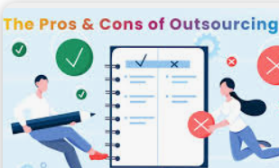

Outsourcing one's life means taking all the domestic, entertainment, and financial tasks and outsourcing or automating those parts of your life.
-
1.Freeing up significant time to focus on activities you enjoy.
-
2. Potentially improving your overall well-being and productivity.
-
3. Lead to a sense of detachment from daily tasks and potentially a reliance on others to manage even small aspects of your life
-
4. Depending on homuch you outsource and your personal perspective on doing chores yourself.
-
(CLICK THE AUDIO BUTTON)
 |
WHAT TO OUTSOURCE
PROS AND CONS OF OUTSOURCING
Outsourcing has several pros and cons. The following pros and cons are important to consider.
(CLICK the down arrow to view the information.)

PROS - POSITIVE IMPACTS OF OUTSOURCING
There are positive and potential negative impacts to outsourcing your personal life domestic activities.
- Increased free time
- By delegating tasks you dislike, like cleaning or grocery shopping, you can dedicate more time to hobbies, relationships, or personal development.
- Reduced stress
- Eliminating the burden of tedious chores can alleviate stress and anxiety associated with managing a household.
- Improved focus:
- With less time spent on mundane tasks, you can concentrate better on important work or personal goals.
- Enhanced quality of life
- By outsourcing tasks that drain your energy, you can prioritize activities that bring you joy and fulfillment.
POTENTIAL NEGATIVE IMPACTS TO OUTSOURCING
There is potential negative impacts to outsourcing your personal domestic activities.
- Loss of control
- Relying heavily on others to manage your life can lead to a feeling of losing control over your daily routine
- Reduced sense of accomplishment
- Completing tasks yourself can provide a sense of achievement, which may be diminished when outsourcing most chores
- Eliminating the burden of tedious chores can alleviate stress and anxiety associated with managing a household.
- Financial burden
- Depending on the services outsourced, the cost can add up significantly
- Social disconnection
- If you outsource too much of your daily interaction with others, like grocery shopping or errands, it could potentially limit your social connections

KEY POINTS TO CONSIDER
These are the overall key points to consider.
- Identify priorities
- Choose tasks that significantly impact your time and energy levels to outsource, while retaining activities you enjoy doing yourself
- Reduced sense of accomplishment
- Completing tasks yourself can provide a sense of achievement, which may be diminished when outsourcing most chores
- Set boundaries
- Clearly define what you expect from service providers to avoid misunderstandings
- Balance is key
- Don't outsource everything - maintaining a sense of personal responsibility is important